Zrzuty — 2026-10-29 10:05 UTC
Ustawienia wyglądu pl · desktop

Prowadzący — runda pl · desktop

Wyświetlacz — runda pl · desktop

Panel sterowania — podsumowanie pl · desktop
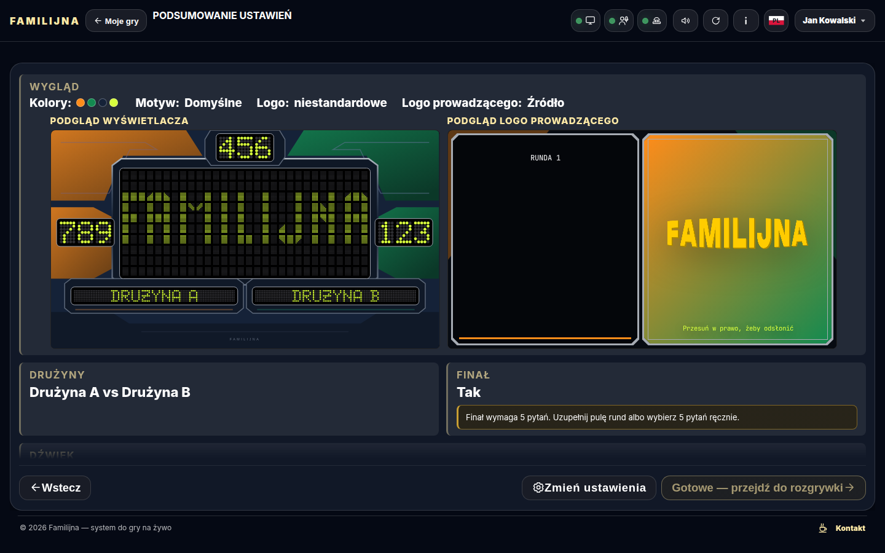
Główny Wyświetlacz pl · 1600×900
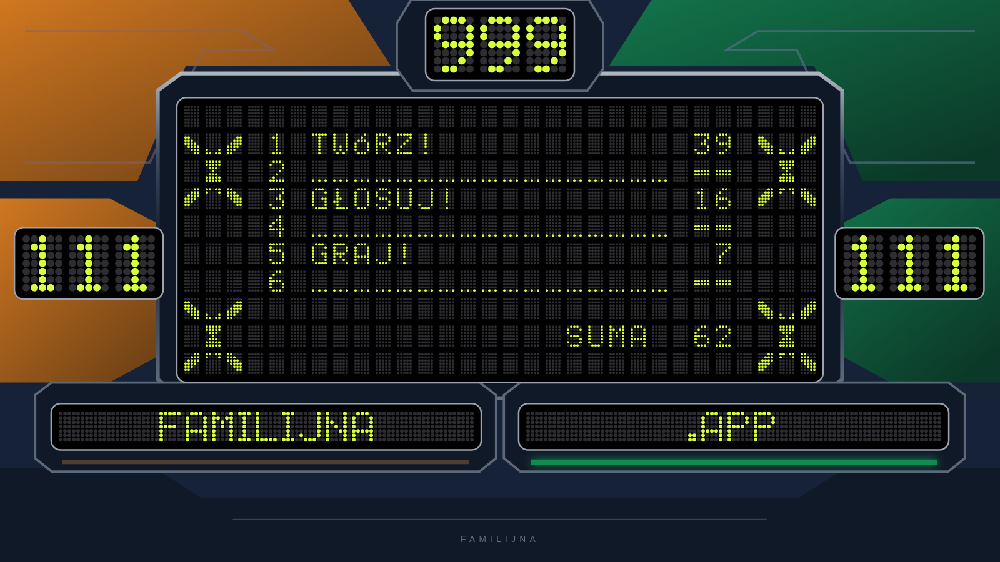
Podgląd linku (og:image) pl · 1200×630

Ustawienia gry — wygląd i logo Prowadzącego pl · desktop
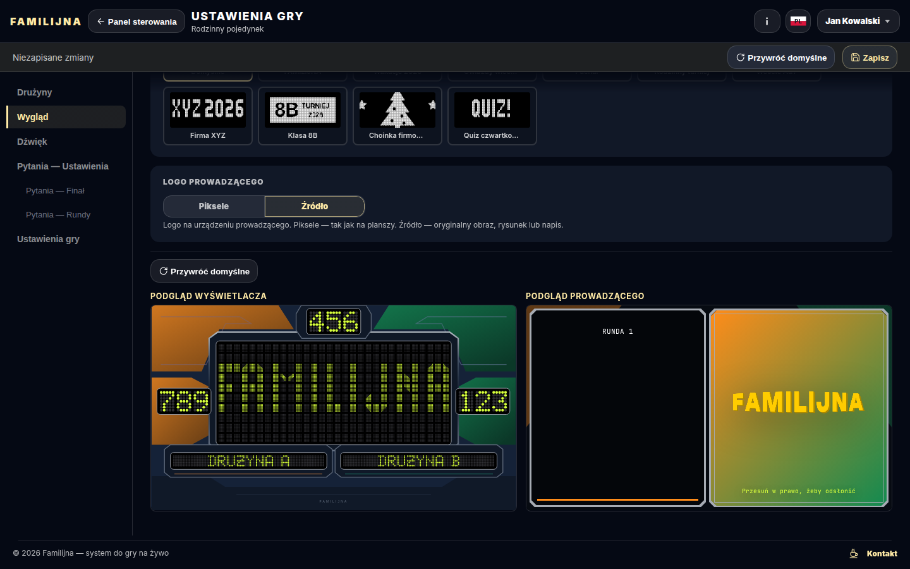
Ustawienia gry — wygląd i logo Prowadzącego pl · phone

Ustawienia gry — podgląd Prowadzącego w motywie nowoczesnym pl · desktop
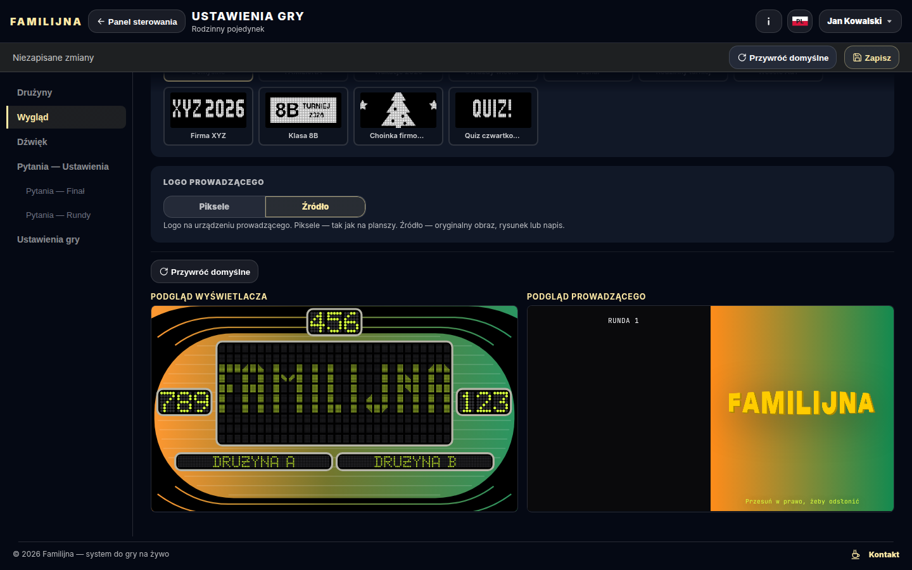
Ustawienia gry — podgląd Prowadzącego w motywie nowoczesnym pl · phone
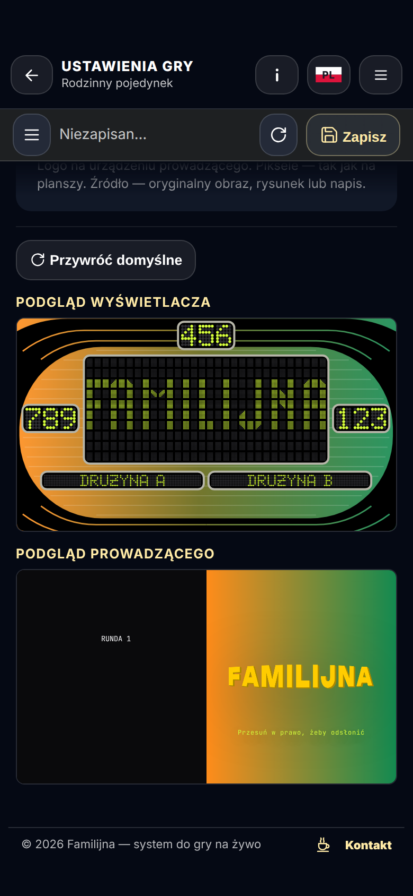
Ustawienia gry — logo domyślne w trybie Piksele pl · desktop
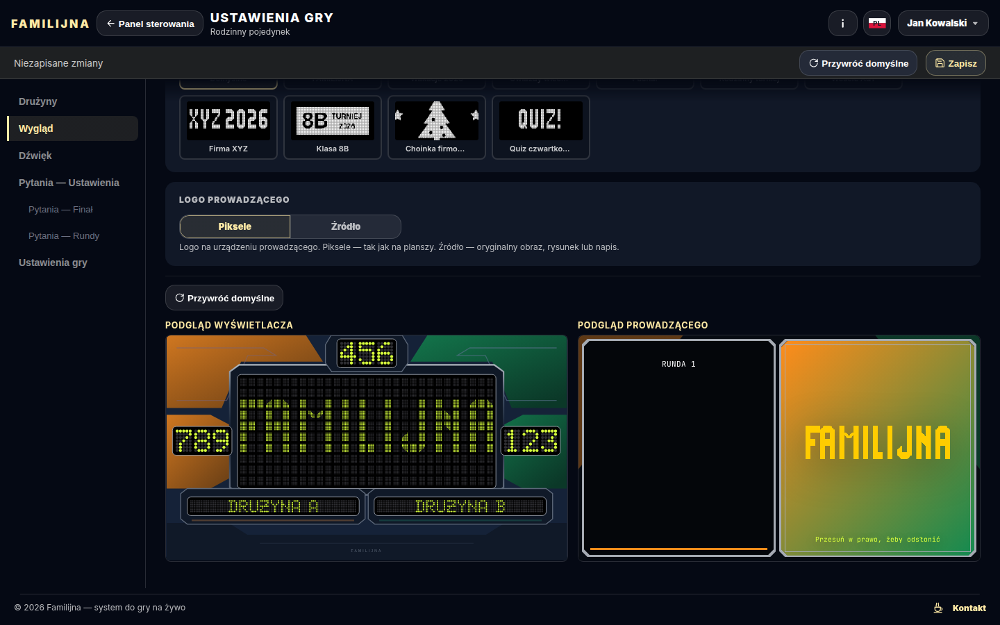
Ustawienia gry — logo domyślne w trybie Piksele pl · phone
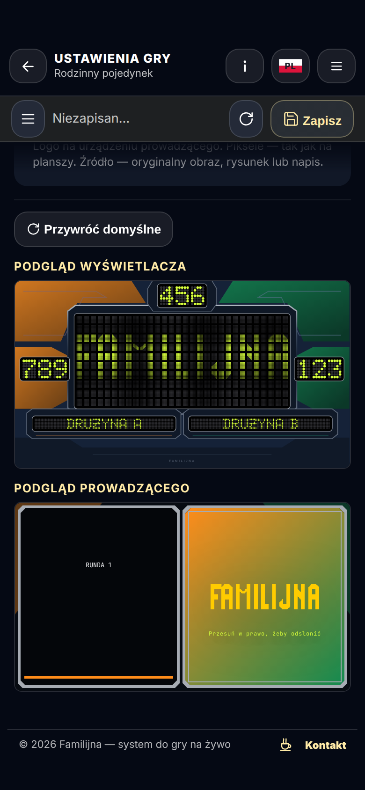
Wyświetlacz — niskie okno komputera (1400×550): Za małe okno pl · 1400×550

Prowadzący — classic pl · phone
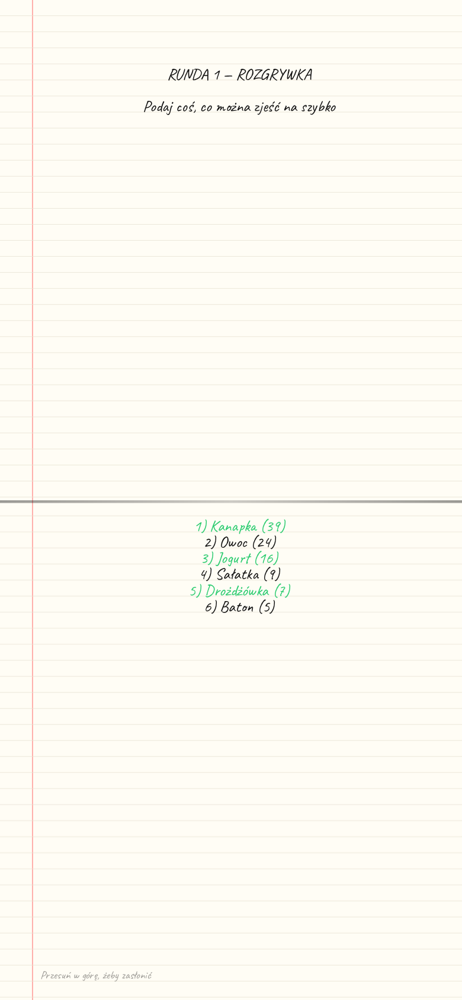
Prowadzący — classic — zasłona pl · phone

Prowadzący — wings pl · phone

Prowadzący — wings — zasłona pl · phone

Prowadzący — radar pl · phone

Prowadzący — radar — zasłona pl · phone

Prowadzący — cabinet pl · phone

Prowadzący — cabinet — zasłona pl · phone
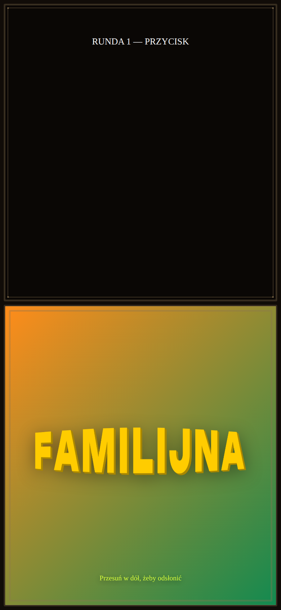
Prowadzący — ribbon pl · phone

Prowadzący — ribbon — zasłona pl · phone

Prowadzący — bridge pl · phone

Prowadzący — bridge — zasłona pl · phone
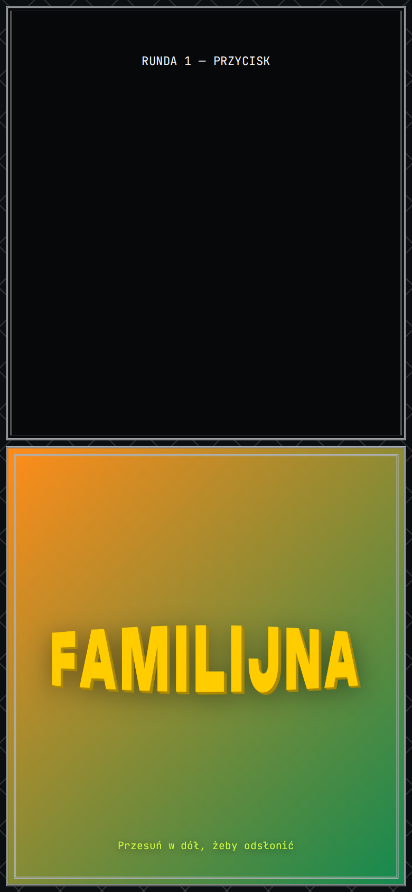
Wyświetlacz — logo gry na starcie (nazwy drużyn) pl · 1600×900

Wyświetlacz — pojedynek: pusta plansza i lampka drużyny pl · 1600×900

Wyświetlacz — przejęcie: trzy X drużyny B, duży X drużyny A pl · 1600×900
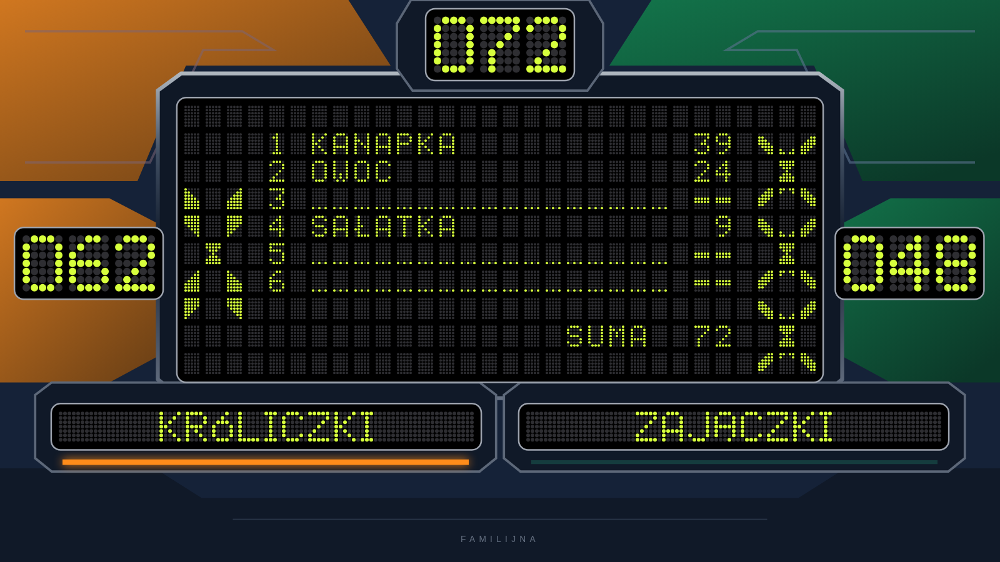
Wyświetlacz — rozgrywka: odsłonięte odpowiedzi, pula i jeden X pl · 1600×900

Wyświetlacz — finał po graczu 1: odpowiedzi i suma pl · 1600×900
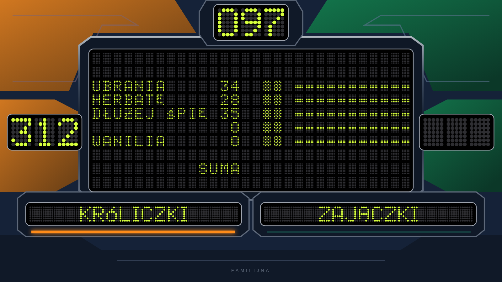
Wyświetlacz — plansza finału: odpowiedzi gracza 1 i 2 pl · 1600×900

Wyświetlacz — koniec gry: wygrana kwota pl · 1600×900

Wyświetlacz — koniec gry bez finału: punkty zwycięzców pl · 1600×900

Wyświetlacz — koniec gry: logo (remis) pl · 1600×900

Prowadzący — motyw wgrany (ramki z pliku) pl · phone
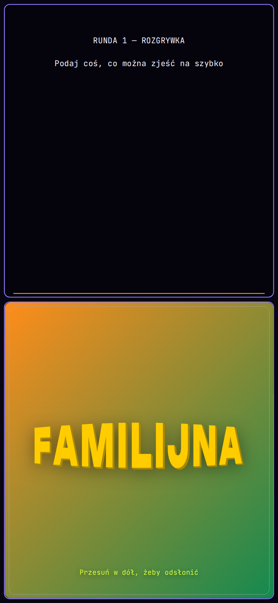